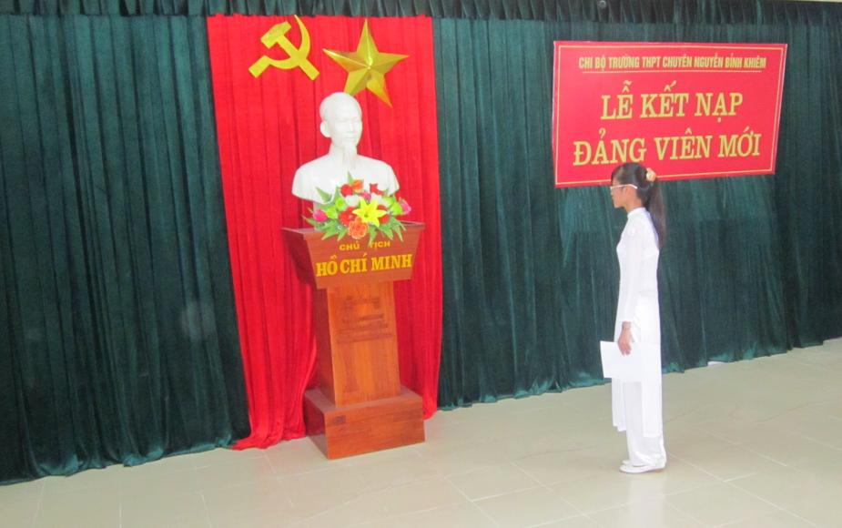

Lễ kết nạp Đảng viên mới của Chi bộ Trường THPT chuyên Nguyễn Bỉnh Khiêm

Lần cập nhật cuối lúc Thứ hai, 29 Tháng 10 2012 09:19 Viết bởi Administrator Thứ sáu, 05 Tháng 10 2012 16:54
Ngày 17 tháng 8 năm 2012 chi bộ trường THPT chuyên Nguyễn Bỉnh Khiêm tổ chức kết nạp cho 12 đoàn viên ưu tú đứng vào hàng ngũ của Đảng.
Đây là sự kiện có ý nghĩa quan trọng trong công tác xây dựng Đảng, được coi là nhiệm vụ trọng tâm trong công tác xây dựng và phát triển tổ chức, lực lượng của Chi bộ. Trình tự các nội dung, nghi lễ của buổi lễ kết nạp Đảng viên mới đã được diễn ra trong không khí trang trọng, đúng quy định của Điều lệ Đảng.

Tại buổi Lễ, Thầy Nguyễn Đình Tiến Bí thư Chi bộ đọc và trao Quyết định của Ban Thường vụ Đảng bộ Thành Phố Tam Kỳ về việc chuẩn y kết nạp 12 đồng chí vào Đảng cộng sản Việt Nam; phân công đảng viên chính thức tiếp tục bồi dưỡng, giúp đỡ đảng viên mới phấn đấu; giao nhiệm vụ và căn dặn đảng viên vừa được kết nạp vào Đảng. Thầy Nguyễn Đình Tiến nhấn mạnh: " 12 đồng chí được kết nạp vào Đảng lần này thực sự là những quần chúng ưu tú, có động cơ phấn đấu đúng đắn, có phẩm chất chính trị tốt, đủ tiêu chuẩn kết nạp vào Đảng và luôn hoàn thành xuất sắc nhiệm vụ được giao. Được kết nạp vào Đảng, thấy rõ niềm vinh dự tự hào bao nhiêu, các đồng chí cần phải thường xuyên đề cao và phát huy vai trò trách nhiệm trong việc tu dưỡng, rèn luyện, phấn đầu, học tập nâng cao nhận thức chính trị, năng lực công tác và thực hiện tốt nhiệm vụ của người Đảng viên; góp phần xây dựng Đảng trong sạch vững mạnh".
Trước cờ Đảng, cờ Tổ quốc và chân dung của Hồ chủ tịch, 12 đảng viên mới đọc lời tuyên thệ.
Đồng chí Cao Lê Vân Anh thay mặt cho 12 đồng chí Đảng viên mới phát biểu cảm tưởng bày tỏ sự cảm ơn chân thành tới Đảng bộ Thành Phố Tam Kỳ, cảm ơn Chi bộ Đảng trường THPT chuyên Nguyễn Bỉnh Khiêm và các Đảng viên đã thường xuyên quan tâm giáo dục, bồi dưỡng, giúp đỡ để được kết nạp vào hàng ngũ Đảng viên của Đảng Cộng sản Việt Nam. Đồng thời, đồng chí cũng bày tỏ niềm phấn khởi, xúc động và tự hào của mình khi được đứng trong hàng ngũ của Đảng và hứa sẽ tiếp tục phấn đấu để luôn xứng đáng là người Đảng viên gương mẫu trong giai đoạn mới, đóng góp sức mình vào việc thực hiện thành công nhiệm vụ chính trị của Đảng, xây dựng Đảng trong môi trường học tập ở các trường đại học của các đồng chí trong sạch vững mạnh.
Kết thúc buổi lễ, các đồng chí đảng viên trong Chi bộ đã chúc mừng, tặng hoa và chụp ảnh lưu niệm cùng đảng viên mới.
Tin bài: Châu Văn Thọ: BTĐT
- 10/10/2014 00:00 - Ban đại diện cha mẹ phụ huynh học sinh Trường THPT…
- 09/10/2014 08:58 - Quy chế hoạt động của Quỹ Khuyến học - Khuyến tài …
- 23/09/2012 10:30 - Chi đoàn giáo viên
- 23/09/2012 10:29 - Hội chữ thập đỏ
- 23/09/2012 10:29 - Hội khuyến học
- 23/09/2012 10:28 - Công đoàn